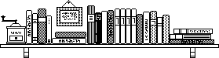

Readings

The following lists of books and book chapters cover many of the ideas from this course:
The course will require some knowledge of Racket beyond ISL+, which most of you know from Fundamentals I. I recommend two sources:
Realm of Racket is intended to bridge the gap between a course such as Fundamentals I and this one. The last (unnumbered) chapter spells out the idea of turning Racket into a lazy language. Working through some chapters in this book will help you get ready for the core of this course.
The Racket documentation is extensive. As a print book, it comprises several thousand pages. You want to use the search box to find specific ideas. I will assign some specific chapters over the course of the semester.
Matthew Butterick’s Beautiful Racket provides an alternative approach to the material and goal of this course. If you like what you see here, I highly recommend working through this book, too.